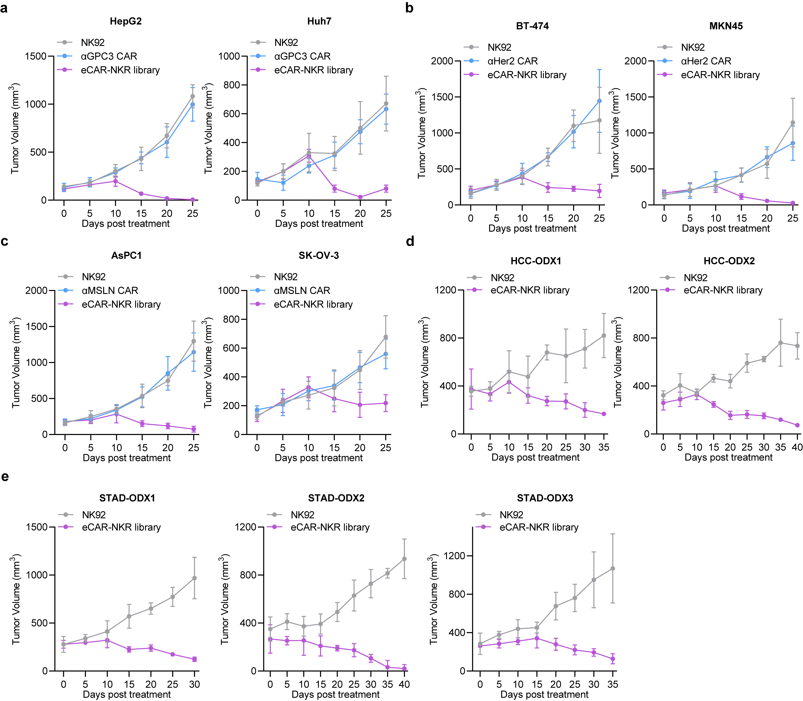

1. Innovative eCAR Technology: The novel chimeric receptor, eCAR, through charge-induced oligomerization enhances lymphocyte proliferation and activation, offering a promising approach for cancer immunotherapy.
2. Enhanced NK Cell Effectiveness: By integrating an NKR library within the eCAR, the engineered NK cells exhibit ligand-dependent cytotoxicity, effectively targeting a wide range of tumor cells and tumor-derived organoids.
3. Broad-Spectrum Cancer Immunotherapy: This study introduces a new strategy for NK cell-based therapy, utilizing an NKR library as a sensor to achieve targeted and efficient destruction of tumor cells across various malignancies.
Developing CAR Constructs for Tumor Antigen-Dependent Proliferation via Directed Evolution
We engineered two classes of CARs configurations targeting CD19, totaling 23 distinct constructs: the Tandem IL2R-ICD CARs incorporate the intracellular domains (ICDs) of the β and/or γ chains serially linked to CD3ζ; the Charge-attracting IL2R-ICD CARs feature a positively charged transmembrane region connecting 4-1BB and CD3ζ, and a negatively charged transmembrane region linked to the IL2R ICD (Fig. 1a). All CARs are coupled with enhanced green fluorescent protein (EGFP) via an internal ribosome entry site (IRES) to identification (Extended Data Fig. 1). These CAR gene fragments were transduced into NK-92 cells using lentivirus, with a second-generation CD19-targeting CAR-NK (BBζ) serving as a positive control (Fig. 1b). Under IL-2 supplemented culturing conditions, NK92, αCD19 NK cells (termed αCD19), and the αCD19 CAR library exhibited comparable proliferation rates. However, in the absence of IL-2 and upon stimulation by Raji cells (CD19 positive), only the αCD19 CAR library demonstrated significant expansion (Fig. 1c-d). The results indicates that the αCD19 CAR library can robustly proliferate in an IL-2 independent manner, responding exclusively to tumor antigen signals.
To pinpoint the specific sequences within the library that facilitate enhanced NK cell proliferation solely in response to tumor antigens, we repeated stimulate NK cells with Raji cells in an IL-2-deprived environment (Extended Data Fig. 2a-c). Post-stimulation, EGFP-positive NK cells were sorted and subjected to single-cell cloning. Subsequent stimulations with Raji cells led to significant enrichment of the constructs 46-BBζ/Fcγ/3β, 46-BBζ/Fcβ/3γ, and 44-BBζ/12β/12γ in comparison to others (Fig. 1e). These results demonstrate that these specific constructs are exceptionally effective in driving robust NK cell proliferation in response to tumor antigen stimulation, independent of exogenous IL-2. These constructs have been designated as eCAR1, eCAR2, and eCAR3, respectively.
Fig. 1 | Design and verification of the synthetic CAR NK-92 cell library. a, Map of lentiviral constructs encoding the IL2R-ICD CAR library. b, Membrane-bound αCD19 CAR-library expression. At 72 h after retroviral transduction, the expression of αCD19 CAR-library on human NK-92 cells was measured by staining with anti-FLAG antibody, followed by flow cytometry analysis. NK-92 cells without transduction were used as negative controls. The histograms shown in grey correspond to the isotype controls and the blue histograms indicate positive fluorescence of αCD19 CAR, whereas the red histograms indicate positive fluorescence of αCD19 CAR-library. Data are representative of at least three independent experiments. c-d, Proliferation activity of CAR-NK cells in response to IL-2 and Raji stimulation (without IL-2). The purple arrow indicates the addition of an equal volume of fresh medium containing 100 IU/mL IL-2. The red arrow indicates the addition of an equal volume of fresh medium without IL-2, containing the same number of non-proliferative Raji cells (***P < 0.001 compared with NK-92). Data are presented as mean ± SD of six independent biological replicates. e, Growth dynamics of the αCD19 CAR-library in the periodical stimulation co-culture. Frequencies of αCD19 CAR-NK were analyzed before the addition of fresh target cells.
Antigen-Specific Proliferation of eCAR-NK in an IL-2- deprived Environment
We further explored the capacity of eCARs to sustain extensive proliferation in an IL-2 independent environment, relying exclusively on tumor antigen signals. To this end, we engineered CAR-NK cells to target specific antigens associated with different malignancies-CD19 and CD20 for hematological cancers, GPC3 for hepatocellular carcinoma, and MSLN for pancreatic cancer, each can be sensed by corresponding eCAR (Fig. 2a). Experimental results revealed that both αCD19 eCAR1 and αCD19 eCAR2 exhibited robust proliferation in response to stimulation by Raji cells, even in the absence of IL-2 (Fig. 2b). In contrast, coculture with CD19-negative tumor cells (K562) without IL-2 supplementation resulted in no proliferation of both αCD19 eCAR1 and αCD19 eCAR2 (Fig. 2c). These observations affirm that eCAR1 and eCAR2 are capable of extensive proliferation driven solely by tumor antigen signals, independent of IL-2.
Given that the proliferative capabilities of αCD19 eCAR1 and αCD19 eCAR2 were indistinguishable, we chose to further validate eCAR1 and henceforth refer to it as eCAR. Similarly, significant proliferation was observed when αCD20 eCAR and αGPC3 eCAR were exposed to their corresponding target cells-Raji (CD20 positive) for αCD20 eCAR and HepG2 (GPC3 positive) for αGPC3 eCAR (Fig. 2d-e). Additionally, under stimulation by the pancreatic cancer cell line AsPC-1 (MSLN-positive), αMSLN eCAR was able to proliferate, whereas stimulation with MSLN-knockout AsPC-1 cells failed to proliferate (Fig. 2f). We next assessed the IL-2R downstream signaling in eCAR-NK cells upon tumor antigen stimulation. Phosphorylation of JAK1/3-STAT1/3/5 and AKT was effectively induced in eCAR-NK by MSLN-positive AsPC-1 cells, a response that was not replicated in either NK-92 or CAR-NK. This activation of signaling pathways was contingent upon the interaction between the tumor antigen and eCAR; stimulation with MSLN-knockout AsPC-1 did not activate these pathways in eCAR-NK cells (Fig. 2g). These findings highlight the specificity of eCAR in driving targeted signaling responses, crucially dependent on antigen recognition in an IL-2-deprived environment.
Fig. 2 | Proliferation activity of the eCAR NK-92 cells. a, Construction of four eCARs targeting different antigens (CD19, CD20, GPC3 and MSLN). b-f, Proliferation activity of eCAR NK-92 cells in response to tumor cells stimulation. Tumor cells treated with mitomycin C, including Raji (20 µM), K562(20 µM), HepG2 (30 µM) and AsPC-1 (30 µM). Data are presented as mean ± SD of five independent biological replicates. g, eCAR NK-92 cell activation pathway of JAK/STAT and MAPK indicated by Western Blot.
Enhanced Cytotoxicity of eCAR-NK in an IL-2-deprived Environments
To deepen our understanding, we proceeded to evaluate the cytotoxic capabilities of eCAR-NK in an IL-2-deprived environment. The results demonstrate that in environments supplemented with IL-2, eCAR-NK and traditional CAR-NK, both targeting specific antigens, exhibit comparable cytotoxic activities (Fig. 3a-d). However, in conditions devoid of IL-2, eCAR-NK continue to exhibit substantial cytotoxicity, while the cytotoxic capacity of traditional CAR-NK is significantly diminished (Fig. 3a-d). Additionally, eCAR-NK cells do not exhibit increased non-specific cytotoxic activity compared to CAR-NK cells. Against MSLN-knockout AsPC-1 cells, both eCAR-NK and CAR-NK display similar and relatively low cytotoxic activities (Extended Data Fig. 3a). Intriguingly, it was observed that eCAR-NK were uniquely capable of secreting the cytotoxic effector molecules interferon-γ (IFN-γ) and tumor necrosis factor-α (TNF-α) in the absence of IL-2 (Fig. 3e and Extended Data Fig. 3b).
We further explored the potential of eCAR to augment the in vivo antitumor efficacy of NK cells. Studies indicates that murine IL-15, with only 70% homology to human IL-15, fails to provide sufficient cytokine signaling for human NK cells (1). Thus, using Human IL-15 transgenic NCG mice (NCG-hIL15) and NCG mice can respectively simulate internal environments with sufficient and insufficient cytokines. Using the NCG-hIL15 mice, we established a Raji xenograft model of hematologic malignancy. After the adoptive transfer of effector cells for treatment, both CD19-specific eCAR-NK and CAR-NK significantly curtailed tumor progression and prolonged the survival of the tumor-bearing mice (Fig. 4a-c). To contrast these findings, we also established a Raji xenograft model in standard NCG mice, which lack human IL-15. In this model, only eCAR-NK cells demonstrated significant antitumor activity and notably extended the survival of tumor-bearing mice (Fig. 4d-f). Moreover, in solid tumor models, which possess more complex TME, eCAR-NK still exhibits robust antitumor activity (Fig. 4g-h). By examining the survival of adoptively transferred cells within the tumors, it was found that eCAR-NK could sustain proliferation over a 21-day observation period, whereas CAR-NK could not (Fig. 4i). Collectively, these results underscore that eCAR NK cells can effectively suppress tumor growth and enhance intratumoral survival, independent of cytokine support, and driven solely by tumor antigen recognition.
Fig. 3 | In vitro antitumor effect of the eCAR NK-92 cells. a-d, Cytotoxic activity of NK-92 (control), CAR or eCAR co-cultured with different tumor cells. Data were assessed by LDH Assay at the indicated E:T ratios and presented as mean ± SD of five independent biological replicates. (ns, not significant, *P < 0.05, **P < 0.01, ***P < 0.001 compared with NK-92). Data are mean ± SD. e, Killing activity of NK-92 (control), αMSLN CAR or αMSLN eCAR co-cultured with AsPC-1 (MSLN+/+). The IFN-γ and TNF-α expression levels of eCAR NK-92 cells and the control NK cells against AsPC-1 (MSLN+/+) under the condition of IL-2+ and IL-2- were assessed by flow cytometry.

Fig. 4 | In vivo antitumor effect of the eCAR NK-92 cells. a, NCG-hIL15 mice were transplanted with Raji and the in vivo assess for tumor growth after treatment. The bioluminescence was monitored every 7 days. Image radiance values were normalized using Living Image (Perkinelmer). b-c, Tumor growth (b) and survival (c) of tumor-bearing mice treated with PBS (control), NK-92, αCD19 CAR or αCD19 eCAR. d, NCG mice were transplanted with Raji and the in vivo assess for tumor growth after treatment. The bioluminescence was monitored every 7 days. Image radiance values were normalized using Living Image (Perkinelmer). e-f, Tumor growth (e) and survival (f) of tumor-bearing mice treated with PBS (control), NK-92, αCD19 CAR or αCD19 eCAR. g-h, Tumor volume and tumor weight of tumor-bearing mice treated with PBS (control), NK-92, αMSLN CAR or αMSLN eCAR (ns, not significant, **P < 0.01, ***P < 0.001 compared with NK-92). Data are mean ± SD. i, The eCAR NK-92 infiltration after treatment in subcutaneous pancreatic tumor biopsies was assess by immunofluorescence. The green fluorescence indicated the eCAR NK-92 cells and the blue fluorescence indicated DAPI, scale bar = 20 μm.
Integration of NKR Repertoire into eCAR Achieves Pan-Cancer Recognition
Considering the inherent heterogeneity and antigenic variability of solid tumors, we aimed to integrate an NKR repertoire into the eCAR to broaden the adoptive cells' recognition capabilities across a wide range of tumor antigens. We engineered eCAR by replacing the scFv to Ig-like domain of NKRs, facilitating the display of an NKR library (Fig. 5a, refer to it as eCAR-NKR library). It was found that various tumor stimuli could promote the proliferation of the eCAR-NKR library in the absence of exogenous cytokines (Fig. 5b). We summarized the NKRs and their corresponding ligands and examined the expression of NKR ligands on the surface of various tumor cells (Fig. 5c and Extended Data Fig. 4). Subsequently, we aimed to identify an eNKR from the eCAR-NKR library that could recognize pan-cancer. To achieve this, we stimulated the eCAR-NKR library with different tumor cells in vitro without exogenous cytokines and enriched eNKR. Ultimately, we discovered that NKG2D-eCAR NK cells were consistently enriched under stimulation by various tumors (Fig. 5d-i).
Fig. 5 | Design and characterization of eCAR-NKR library. a, Construction of eCAR-NKR library. Map of lentiviral constructs encoding the eCAR-NKR library expression. At 72 h after retroviral transduction, the expression of eCAR-NKR library on human NK-92 cells was measured by staining with anti-FLAG antibody, followed by flow cytometry analysis. NK-92 cells without transduction were used as negative controls. The red histograms indicate positive fluorescence of eCAR-NKR library. Data are representative of at least three independent experiments. b, The expansion level of eCAR-NKR library in response to different tumor stimulations. c, The expression levels of different tumor ligands in different tumor cell lines. Data were normalized using z-score. d-i, The enrichment of eCAR-NKR library was assessed by NGS after stimulation of different tumor cells.
eCAR-NKR improves antitumor effect target solid tumors
We proceeded to validate the antitumor efficacy of the eCAR-NKR library in vivo using various solid tumor mouse models, including GPC3-positive cancers (HepG2 and Huh-7), HER2-positive cancers (BT-474 and MKN45), and MSLN-positive pancreatic cancers (AsPC-1 and SK-OV-3). Post-treatment observations revealed that the eCAR-NKR library significantly curtailed tumor growth across these models (Fig. 6a-c). Furthermore, we established patient-derived tumor organoid xenograft (ODX) models to closely mimic clinical scenarios. The administration of the eCAR-NKR library to these ODX models effectively halted tumor progression, underscoring the library’s potent therapeutic potential (Fig. 6d-e).

Fig. 6 | In vivo antitumor effect of the eCAR-NKR library. a, Tumor growth of tumor-bearing mice with GPC3-positive cancers (HepG2 and Huh-7) treated with NK-92 (control), αGPC3 CAR or eCAR-NKR library. b, Tumor growth of tumor-bearing mice with HER2-positive cancers (BT-474 and MKN45) treated with NK-92 (control), αHER2 CAR or eCAR-NKR library. c, Tumor growth of tumor-bearing mice with MSLN-positive pancreatic cancers (AsPC-1 and SK-OV-3) treated with NK-92 (control), αMSLN CAR or eCAR-NKR library. d, Tumor growth of tumor-bearing mice with two types of patient-derived tumor organoid xenografts (HCC) treated with NK-92 (control) or eCAR-NKR library. e, Tumor growth of tumor-bearing mice with three types of patient-derived tumor organoid xenografts (STAD) treated with NK-92 (control) or eCAR-NKR library. Data are presented as mean ± SD.